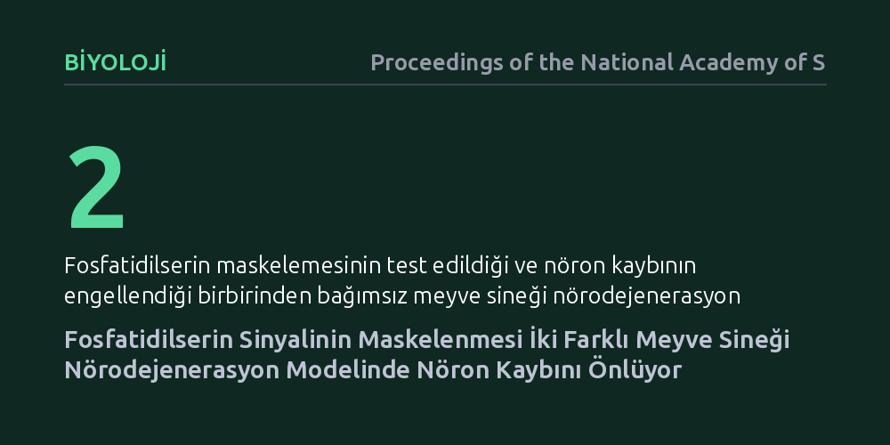

BIYOLOJI · Proceedings of the National Academy of Sciences · 2026-10-09
Araştırmacılar, nörodejenerasyon sürecinde stres altındaki canlı nöronların dış zarlarında beliren fosfatidilserin sinyalinin maskelenmesinin hücre kaybını durdurup durduramayacağını inceledi. İki farklı meyve sineği modelinde bu sinyalin engellenmesinin, glia hücrelerinin canlı nöronları yok etmesini önleyerek nöron kaybını durdurduğu gösterildi.
Nörodejeneratif hastalıklarda nöronların doğrudan hastalıktan ölmek yerine, stres sinyali verdikleri için destek hücreleri tarafından henüz canlıyken yok edildiğini ortaya koyuyor.

Alzheimer veya Parkinson gibi nörodejeneratif hastalıkların en belirgin özelliği beyindeki nöronların zamanla kaybedilmesidir. Uzun yıllar boyunca bilim dünyasında bu nöronların hücresel stres veya toksik protein birikimi nedeniyle kendi kendilerine öldükleri, yani intihar ettikleri varsayıldı. Ancak son yıllarda yapılan gözlemler, beyindeki yardımcı ve temizlikçi hücreler olan gliaların bu süreçte pasif birer çöpçüden fazlası olabileceğini düşündürmeye başladı.
Asıl soru şurada düğümleniyor: Hasar gören veya strese giren nöronlar gerçekten geri dönülmez biçimde ölüme mi mahkûm, yoksa henüz canlı ve kurtarılabilir durumdayken bağışıklık benzeri mekanizmalar tarafından erken bir infaza mı kurban gidiyorlar? Bu soruya verilecek yanıt, nörodejeneratif hastalıklarla mücadele stratejimizi kökten değiştirebilir; çünkü amaç nöronun kendi ölümünü durdurmak yerine onu çevresindeki temizlik hücrelerinin saldırısından korumaya evrilebilir.
Normal şartlarda sağlıklı bir hücrenin zar yapısı asimetriktir; fosfatidilserin adı verilen özel bir yağ molekülü zarın yalnızca iç yüzeyinde tutulur. Hücre ciddi bir stres yaşadığında veya ölmek üzere olduğunda bu molekül dış yüzeye taşınır ve çevredeki yutucu hücrelere açık bir 'beni ye' çağrısı yapar. Araştırmacılar, bu çağrının henüz ölmemiş nöronlarda da ortaya çıkıp çıkmadığını ve glia hücrelerini erkenden harekete geçirip geçirmediğini test etmek için model organizma olarak meyve sineğini (Drosophila) seçtiler.
Deneylerde birbirinden farklı iki bağımsız nörodejenerasyon modeli kullanıldı. Bilim insanları, genetik ve moleküler müdahalelerle stres altındaki nöronların dış yüzeyinde beliren fosfatidilserin moleküllerini hedef alarak bunları maskeledi. Amaç, yutucu glia hücrelerinin üzerindeki reseptörlerin bu 'beni ye' sinyalini görmesini engellemek ve bunun nöronların hayatta kalma oranları üzerindeki etkisini mikroskop altında doğrudan incelemekti.
Elde edilen bulgular oldukça nettir: İncelenen her iki bağımsız nörodejenerasyon modelinde de stres altındaki nöronlar, henüz canlı ve işlevsel olmalarına rağmen dış zarlarında fosfatidilserin sergilemektedir. Glia hücreleri bu sinyali algıladıklarında nöronları ölü kabul edip derhal yutmaya başlamaktadır. Ancak araştırmacılar bu sinyali moleküler olarak maskelediklerinde, glia hücrelerinin yutma faaliyeti belirgin biçimde engellendi.
En kritik sonuç ise şudur: Sinyali maskelenen nöronlar glia saldırısından kurtulduğunda ölüp gitmediler; aksine canlılıklarını korumaya devam ettiler. Bu durum, 'stres altındaki ancak canlı nöronların' glia hücreleri tarafından zamansız bir şekilde ortadan kaldırıldığını ve bu sinyalin örtülmesinin nöron kaybını doğrudan önleyebildiğini deneysel olarak gösterdi.
Bu çalışma, nörodejenerasyon süreçlerinde nöron kaybının yalnızca hücre içi bozulmalardan kaynaklanmadığını, hücreler arası hatalı bir etkileşimin de kilit rol oynadığını kanıtlıyor. Canlı fakat stresli nöronların zamansız temizlenmesini önlemek, sinir hücresi kaybını yavaşlatabilecek yeni bir biyolojik mekanizmaya işaret ediyor. Hücrenin yardım çağrısının bir ölüm fermanına dönüşmesini engellemek, gelecekteki araştırmalar için somut bir hedef sunuyor.
Yine de temkini elden bırakmamak gerekir. Çalışmanın meyve sineklerinde yürütülmüş olması, insan beynindeki karmaşık hücresel çevrede aynı mekanizmanın birebir işleyeceğini garanti etmez. Ayrıca fosfatidilserin sinyalini maskelemek, beynin gerçekten ölmüş hücreleri ve hücresel atıkları temizleme görevini aksatabileceğinden, uzun vadede nasıl bir biyolojik maliyet yaratacağı henüz bilinmemektedir.